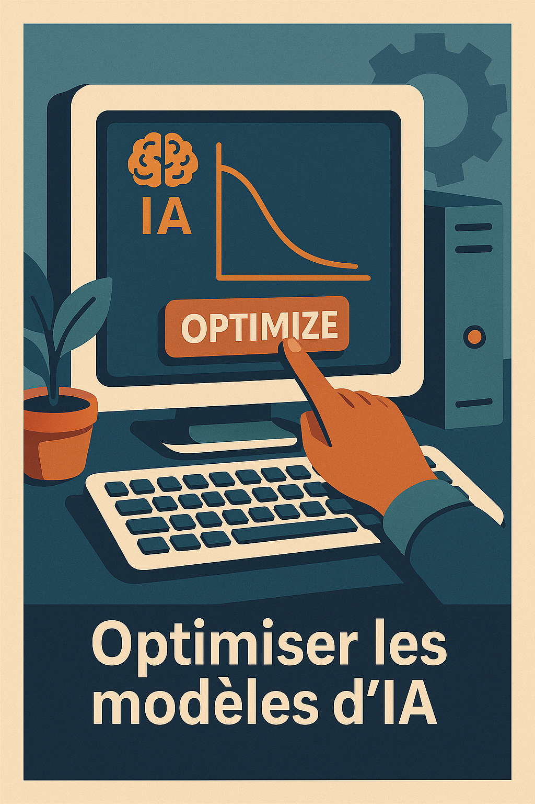
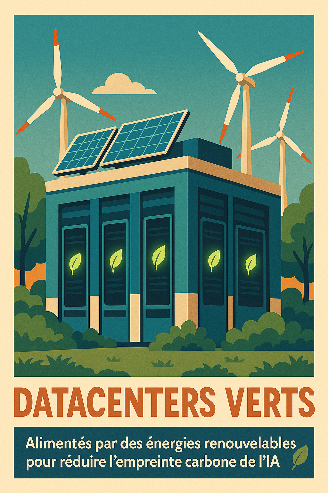
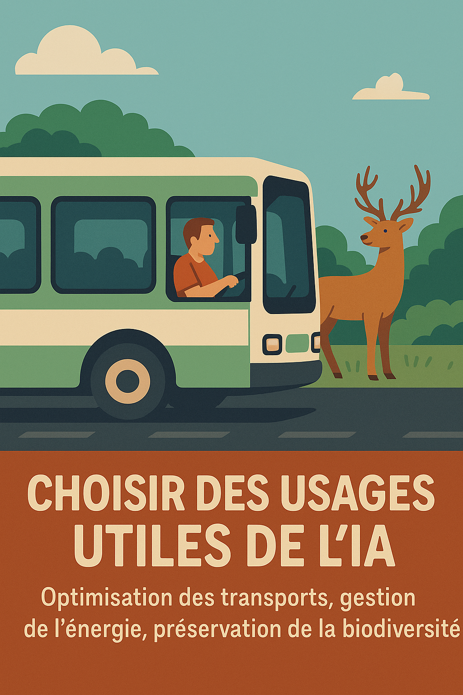

Et maintenant ?
Voici quelques pistes concrètes pour rendre l’usage de l’intelligence artificielle plus durable.

Optimiser les modèles IA
Entraîner des modèles plus petits, plus efficaces, moins énergivores… pour un impact carbone réduit, sans perdre en performance.

Datacenters verts
Choisir des centres de données alimentés en énergie renouvelable pour réduire l’empreinte énergétique de l’IA.
Transparence sur l’impact
Encourager les services numériques à afficher un label ou un score CO₂ clair pour chaque service ou requête.

Des usages utiles de l’IA
Optimisation des transports, gestion de l’énergie, préservation de la biodiversité… l’IA peut aider à compenser ses propres impacts.